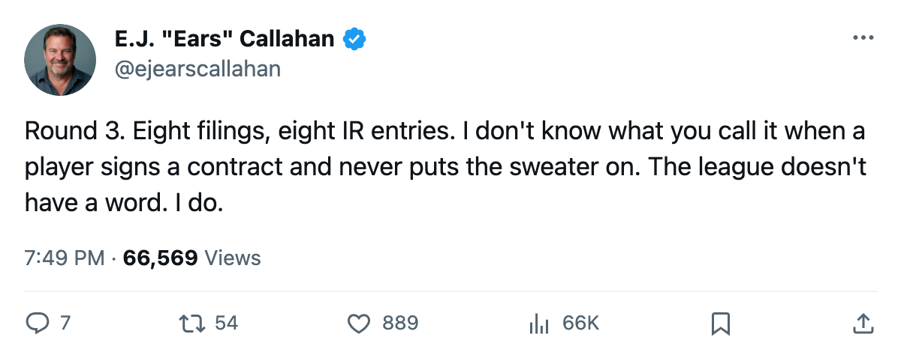
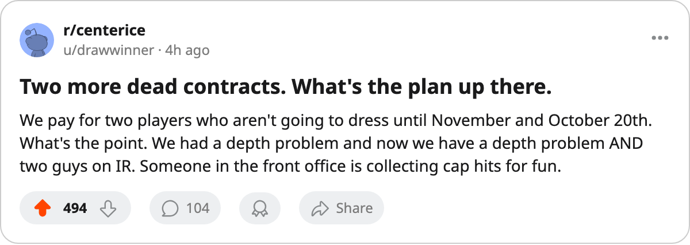

Sign-and-Injure, Round 3: Boston Adds 2. The Pattern Holds 8 Names, 0 Shifts.
Samsonov and Huml filed Oct 12. Both on IR by Oct 16. The pool still has 0 names.
 E.J. "Ears" CallahanInsider · The Hot Stove
E.J. "Ears" CallahanInsider · The Hot Stove

Sign-and-injure pattern: 8 contracts filed in October, 8 IR listings, 0 players suited up. The free-agent pool stays empty by design or by coincidence.
 Boston Bruins filed contracts for
Boston Bruins filed contracts for  Sergei Samsonov87 ($355,250) and Ivan Huml77 ($277,110) on Oct 12. By Oct 16, the league had listed Samsonov on IR with a neck, out until Nov 9, and Huml on IR with an elbow, out until Oct 20.
Sergei Samsonov87 ($355,250) and Ivan Huml77 ($277,110) on Oct 12. By Oct 16, the league had listed Samsonov on IR with a neck, out until Nov 9, and Huml on IR with an elbow, out until Oct 20.
That is round 3 of the pattern this desk has tracked. Four contracts filed Oct 7-8, all four on IR by Oct 12. Two more filed Oct 10, both on IR by Oct 15. Two more filed Oct 12, both on IR by Oct 16. Eight filings, eight injuries, and the free-agent pool still reads 0 names.
The Boston read
Boston Bruins sits at $60.32M payroll and $20.90M profit, with a 1-0-1 record through 2 games and a club morale average of 92.0. Neither Samsonov nor Huml appears in any box score the league has published. Samsonov costs $355,250, Huml $277,110. Zero minutes of production between them.
Samsonov, overall 86 on the Bureau's Book, was expected to slot third-line at Boston. Huml, overall 76, was depth. The Boston Bruins club now carries 2 men on IR, the most of any team in the league.
The pattern's effect on the market
The free-agent pool has held 0 names since May 31, when 29 clubs filed trade windows the same day. The sign-and-injure filings are what keep it that way. A player signs, lands on IR, and does not clear waivers or hit the open market. Clubs that want bodies can't find them, and the contracts sit in a window nobody can challenge.
The onset windows on all 8 injuries cluster tight: filed, then listed on IR within 3 to 5 days. The return dates range from 5 to 40 days. None of the 8 carries a body part the league has recorded a cause for, per league protocol.
What the league record shows
The Bureau's Contract Ledger still lists no unsigned player at any overall grade. The pool that would normally feed waiver claims, training camp invites and one-year prove-it deals holds nothing. The clubs that filled those windows are the ones filing these contracts.
The read
A man who would know at Boston Bruins says the medical staff flagged Samsonov's neck in the physical. The league's own entry lists onset between Oct 15 and Oct 16, which is after the signing was filed. Whether that is a pre-existing condition caught late or a new one caught fast, the league does not record.
All the pattern needs is a filing date before the IR date and an empty pool. Whether the injury was waiting or the window was chosen, the result is the same.
The 9th name is coming. It always does.

